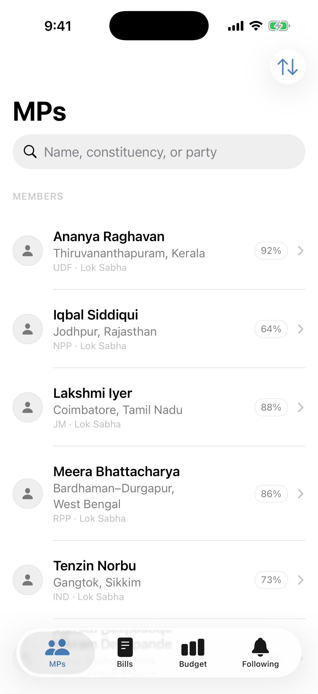
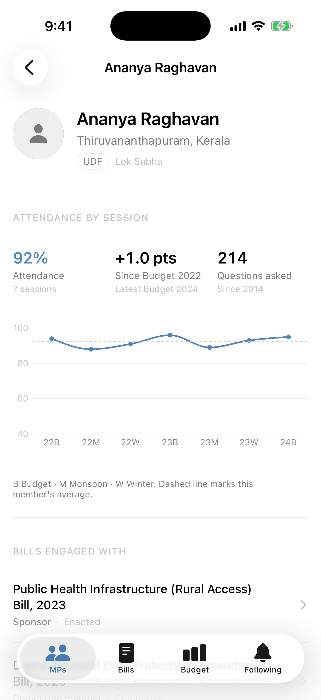
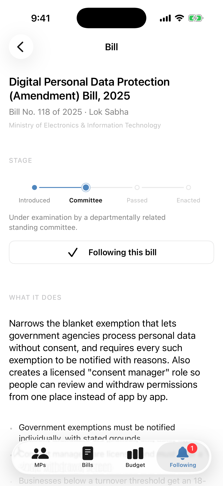
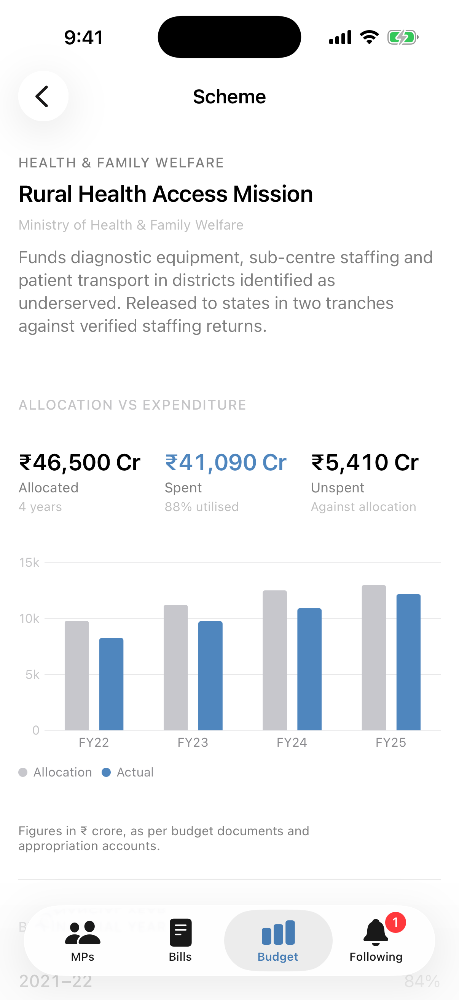
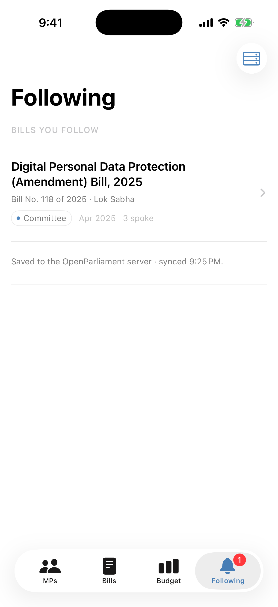
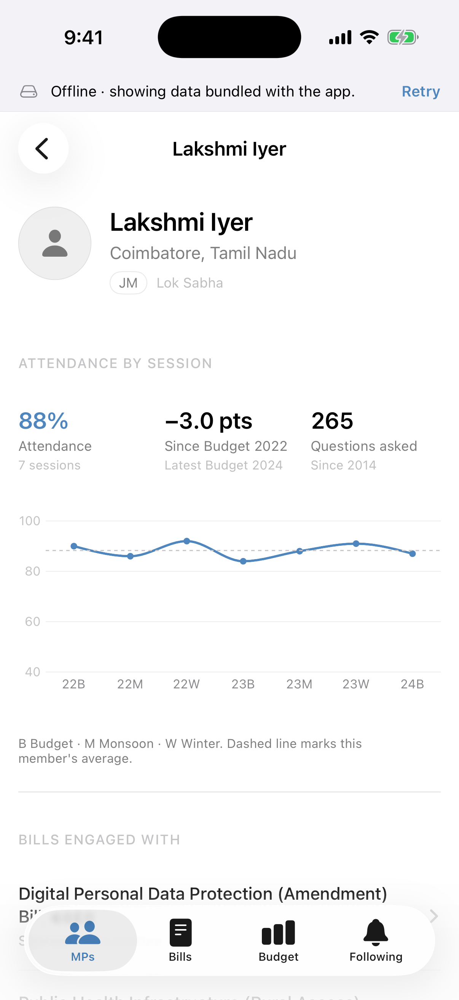
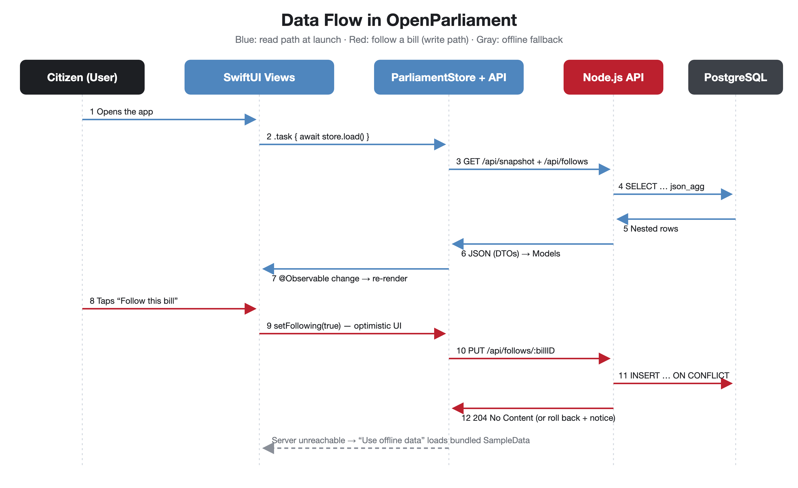
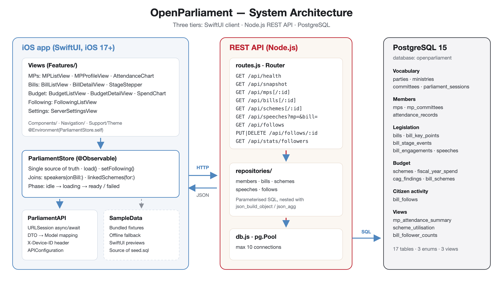
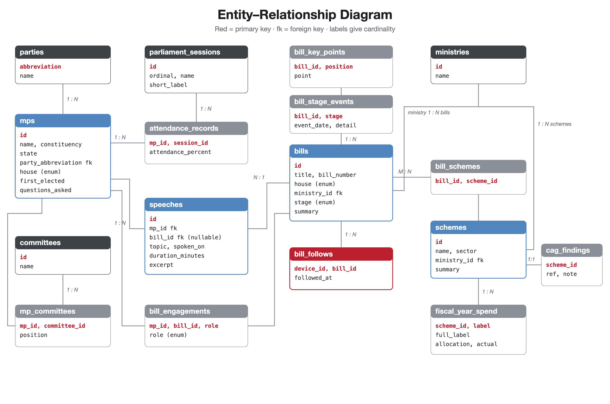

Problem & Solution
Attendance registers, bill texts, budget documents and audit reports are public, but scattered across PDFs and portals. OpenParliament gathers them into one calm, neutral app where every record links to the related ones: a bill shows who spoke on it and which scheme funds it; a scheme shows how much of its allocation was actually spent and what the auditor found.
Data lives in a normalised PostgreSQL database, reaches the app through a REST API, and is held in a single @Observable store. Following a bill writes straight to the database; if the server is down, the app falls back to bundled data.
At a glance
Screens






Functions
Track members
Attendance across seven sessions, trend, questions asked, committees and every speech on record.
Follow legislation
Four-stage progress, plain-language summary, dated history, speakers and the schemes that fund it.
Audit the budget
Four years of allocation vs. expenditure, utilisation, unspent funds and CAG observations.
Follow & sync
Optimistic follow / unfollow written to bill_follows; rolled back with a notice if the write fails.
Resilient
Loading, error and offline states; server address configurable for running on a real iPhone.
Data flow

GET /api/snapshot → nested json_agg rows → models → views re-render.PUT /api/follows/:id → INSERT … ON CONFLICT.Architecture

Database
